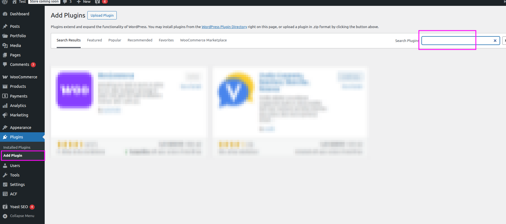
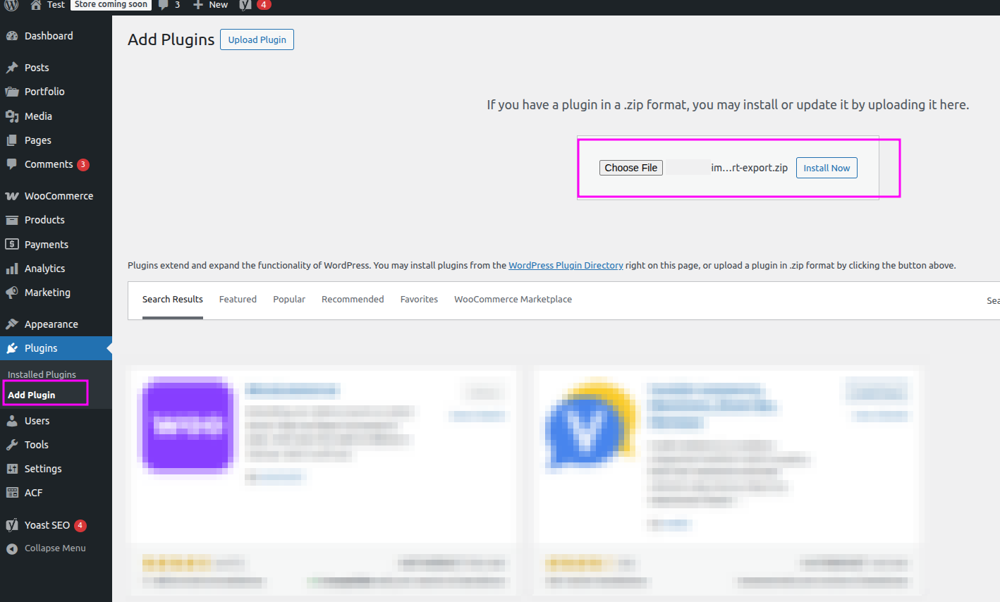
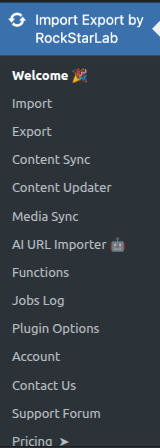

📦 Plugin Installation
Get WP Import Export by RockStarLab up and running on your WordPress site in under two minutes.
Method 1 — Install from WordPress.org
This is the recommended method for most users. The plugin is available directly from the official WordPress plugin repository.
-
1Open the Plugins screen
Log in to your WordPress admin panel and navigate to Plugins → Add New Plugin -
2Search for the plugin Type Import Export by RockStarLab in the search box and press Enter.
-
3Install Click the Install Now button next to the plugin.
-
4Activate Once installation completes, click Activate Plugin

Method 2 — Upload a ZIP File
Use this method if you downloaded the plugin ZIP from WordPress.org.
-
1Download the ZIP Download the plugin ZIP file from WordPress.org.
-
2Open the upload screen Go to Plugins → Add New Plugin → Upload Plugin
-
3Select the file Click Choose File, select the ZIP you downloaded, then click Install Now
-
4Activate Click Activate Plugin after the upload completes.

Method 3 — Install via WP-CLI
For developers who prefer the command line:
wp plugin install import-export-by-rockstarlab --activateAfter Activation
Once the plugin is active, a new menu item Import Export appears in your WordPress admin sidebar. The plugin also adds a dedicated top-level menu with the following sub-pages:
- Import — Import content from CSV files
- Export — Export content to CSV or JSON
- Content Sync — Synchronise content with remote sites
- Media Sync — Sync SFTP-uploaded files to the Media Library
- AI URL Importer — Import content from any URL using AI
- Jobs Log — Review and re-run past import/export jobs
- Options — Plugin settings

✅ Next Step
This plugin has a PRO Addon that adds additional content types for Import,
Export, plus the full Content Updater workflow and transformation functions.
You can also jump straight to
Importing Data if you want to start with the free content types.